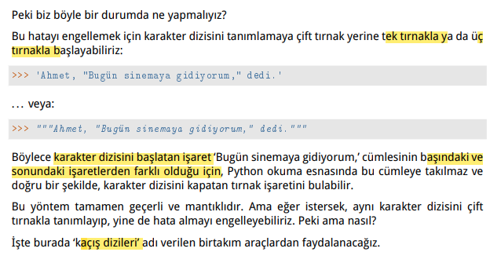
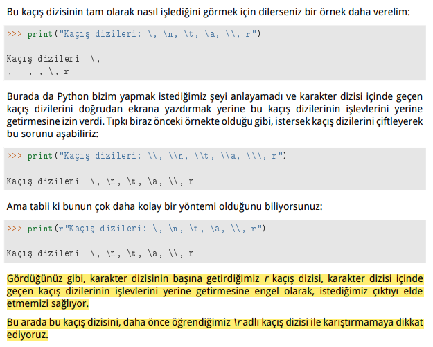
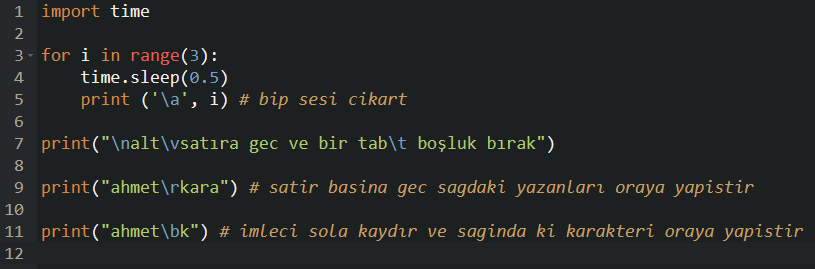
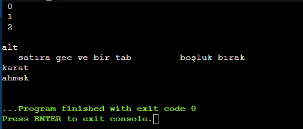
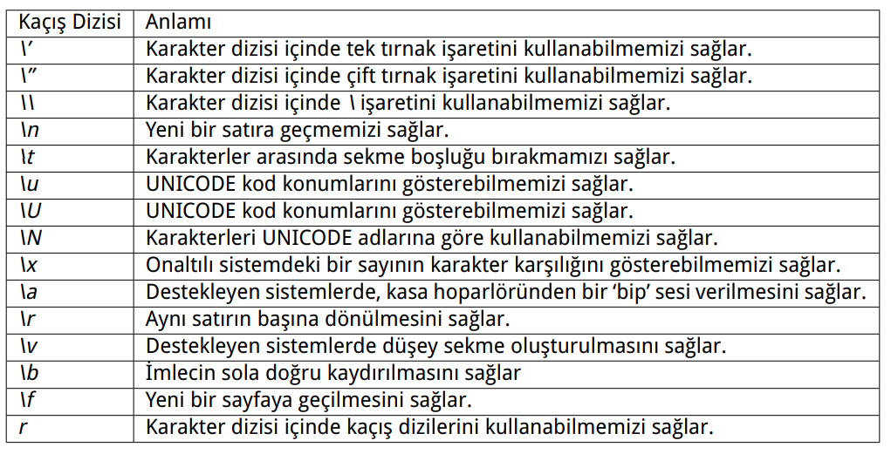

#tekrar et-3
Kaçış Dizileri



import time
for i in range(3):
time.sleep(0.5)
print ('\a', i) # bip sesi cikart
print("\nalt\vsatıra gec ve bir tab\t boşluk bırak")
print("ahmet\rkara") # satir basina gec sagdaki yazanları oraya yapistir
print("ahmet\bk") # imleci sola kaydır ve saginda ki karakteri oraya yapistir

